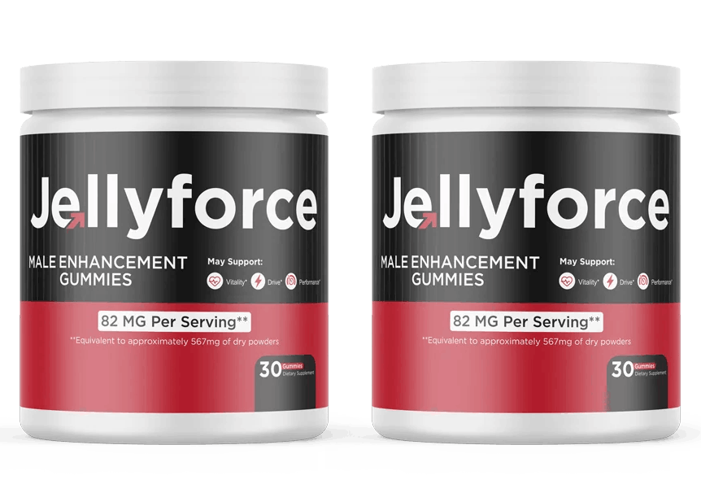

Jelly Force™ – 30-Day Supply, Daily Male Vitality & Energy Support.
Jelly Force is a natural male enhancement supplement created to support men's vitality, stamina, energy, and confidence through a simple daily routine. Many men in the USA look for reliable wellness support as they grow older or experience changes in physical performance, endurance, and overall drive. Jelly Force fits easily into everyday life and focuses on helping men stay active, feel stronger, and maintain healthy performance without making unrealistic promises. It is suitable for adults who want extra support for daily energy, circulation, and long-lasting vitality while keeping up with work, exercise, and personal life.
Jelly Force supports male performance by helping maintain healthy blood flow, physical endurance, and natural energy levels that contribute to overall men's wellness. Regular use, along with a balanced lifestyle, may help men feel more confident, improve stamina during daily activities, and support lasting vitality. For men in the USA seeking a natural way to promote strength, endurance, and healthy male function, Jelly Force offers a practical wellness option that fits into everyday habits while encouraging consistent support for active living and personal well-being.
| Detail | Value |
|---|---|
| Supply Per Bottle | 30 days |
| Supplement Type | Men's wellness supplement |
| Primary Support | Energy, stamina, and vitality |
| Performance Support | Daily endurance and physical performance |
| Suitable For | Adult men |
| Lifestyle Support | Daily men's wellness routine |
Take Jelly Force by following the recommended serving instructions provided on the product packaging. Using the suggested amount each day helps support energy, endurance, circulation, and overall male wellness as part of a consistent routine. Many users find it convenient to take their gummy at the same time every day for better consistency. Avoid taking more than the recommended serving unless instructed by a qualified healthcare professional.
For better daily wellness, combine Jelly Force with nutritious meals, regular physical activity, adequate hydration, quality sleep, and healthy lifestyle habits. Consistent use together with positive daily routines may help support long-term vitality, stamina, and overall well-being. Individual results can differ based on personal lifestyle, age, and activity level.
Jelly Force is intended for adult men and should always be used according to the directions provided on the label. Read the instructions before use and do not exceed the recommended daily serving. If any unexpected discomfort occurs, discontinue use and seek advice from a qualified healthcare professional.
Anyone with an existing medical condition, taking prescription medication, or receiving ongoing medical care should consult a healthcare professional before using Jelly Force. This supplement is not intended for anyone under 18 years of age. Using the product responsibly while maintaining healthy daily habits supports the best overall wellness experience.
According to the product information, Jelly Force orders include a 60-day money-back guarantee. This policy gives eligible customers time to evaluate their experience with the product. Buyers in the USA should review the seller's current refund policy, return instructions, eligibility requirements, and applicable terms before placing an order.
What is Jelly Force?
Jelly Force is a natural male enhancement supplement that supports daily energy, stamina, healthy circulation, and overall men's wellness. It is made for adult men in the USA who want extra support for physical performance and vitality. When used consistently with healthy habits, Jelly Force may help maintain an active lifestyle and improve everyday confidence.
How does Jelly Force work?
Jelly Force supports the body's natural functions linked to blood flow, energy production, endurance, and physical performance. Its blend of plant extracts and nutrients works together to promote daily vitality and help men stay active. Regular use, combined with balanced nutrition and exercise, may provide ongoing support for overall men's wellness.
Who can use Jelly Force?
Jelly Force is intended for healthy adult men in the USA who want support for stamina, energy, endurance, and male vitality. It is suitable for those looking to improve their daily wellness routine. Individuals with medical conditions or those taking medications should consult a qualified healthcare professional before using any dietary supplement.
How should I take Jelly Force?
Take Jelly Force exactly as directed on the product label. Using the recommended daily serving consistently helps support energy, circulation, stamina, and overall male wellness. Many users choose to take it at the same time each day to build a regular routine. Avoid taking more than the suggested daily serving.
How long does it take to notice results from Jelly Force?
Results with Jelly Force can vary from one person to another because everyone has different lifestyles, activity levels, and wellness goals. Some users may notice changes earlier, while others may require several weeks of consistent use. Maintaining healthy eating habits, regular exercise, and quality sleep may support better overall results.
Can Jelly Force be used every day?
Yes. Jelly Force is intended for daily use when taken according to the instructions on the product label. Consistent use helps support ongoing energy, stamina, healthy circulation, and male wellness. Following a healthy lifestyle alongside your daily supplement routine may help maintain long-term vitality and physical performance.
Does Jelly Force support energy and stamina?
Jelly Force is created to support daily energy, physical endurance, and lasting stamina for adult men. It also promotes healthy circulation and overall vitality, helping users stay active throughout the day. Individual experiences can differ, but regular use together with healthy habits may help support better physical performance over time.
Is Jelly Force suitable for men of all ages?
Jelly Force is intended for adult men aged 18 years and older. Many men in the USA choose it to support vitality, endurance, and overall wellness as part of their daily routine. Older adults or anyone with existing health concerns should seek medical advice before starting any new dietary supplement.
Can I take Jelly Force with a healthy lifestyle?
Yes. Jelly Force works best when combined with balanced nutrition, regular physical activity, proper hydration, and enough sleep. Healthy lifestyle habits help support long-term wellness, energy, stamina, and endurance. Following a consistent routine may improve your overall experience while using the supplement as part of daily wellness.
Where can I buy Jelly Force in the USA?
Jelly Force is primarily available through its official website for customers in the USA. Purchasing from the official source helps ensure you receive the genuine product along with the latest product information and current offers. Always review the product details carefully before completing your purchase.